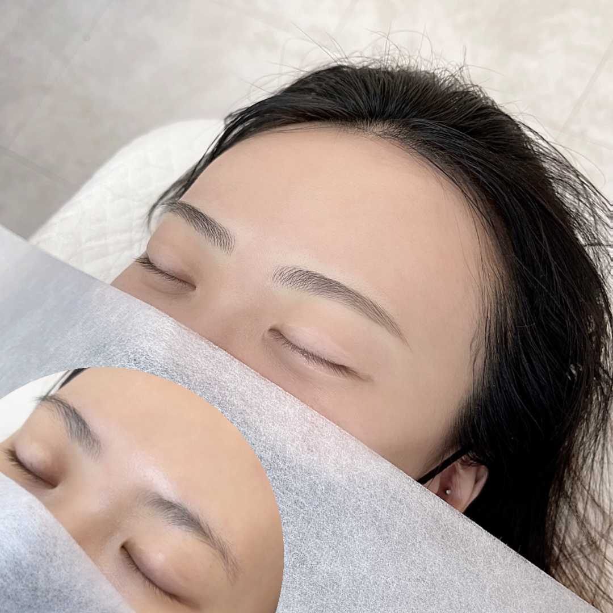

1.사람들은 상대방이 눈썹숱이 적으면 약해보인다는 인상을 느끼고, 반대로 눈썹을 짙고 풍성하게 보이도록 만들면 강해보이는 인상을 느끼게 된다.
소스..src 2.눈썹문신은 눈썹 부위에 색소를 넣어 강한 인상을 느끼게 만들어 주는 시술이다.
3.사람들은 문신한 사람을 부정적으로 보는 경우가 많지만, 눈썹문신만큼은 오히려 긍정적으로 보는 경우가 많다. 다만 문신눈썹도 엄연히 문신 시술인만큼 의료인이 아닌 자가 하는 문신 시술은 합법이 아니기 때문에 부작용 같은 문제에 대해 미리 알아보는 것이 좋다.